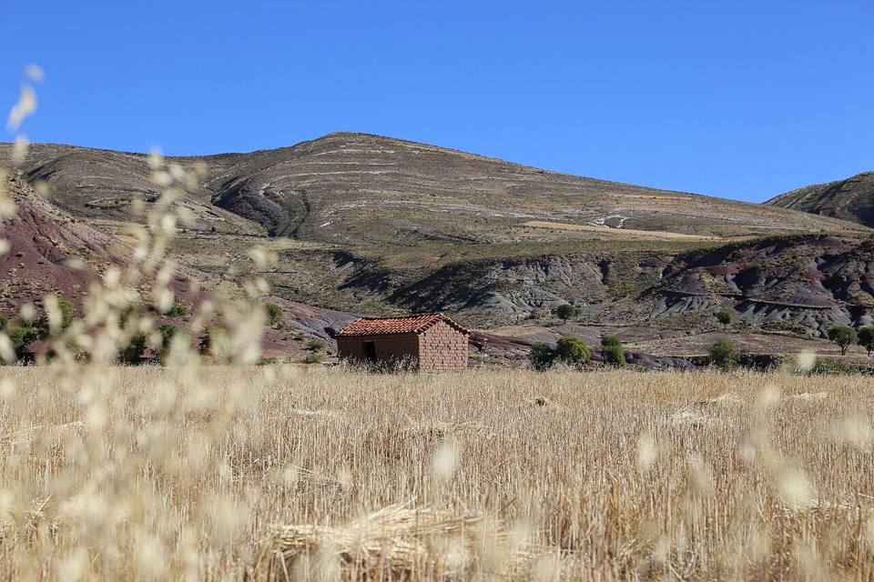
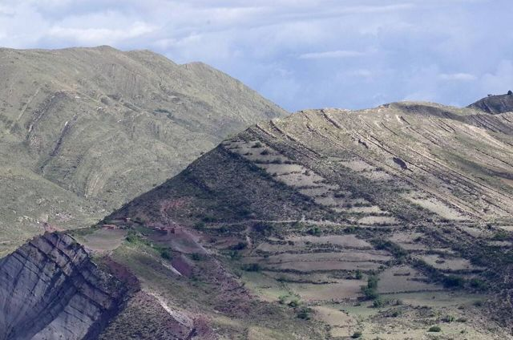
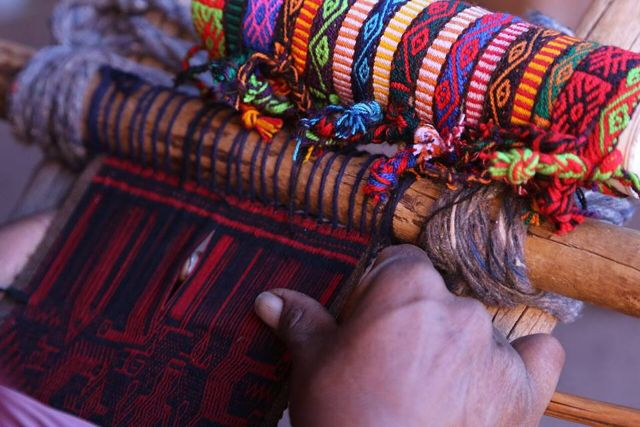
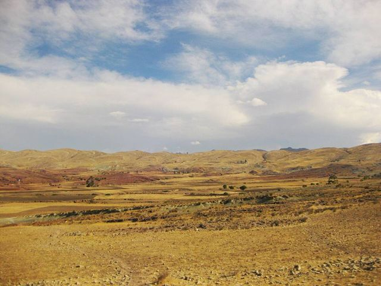
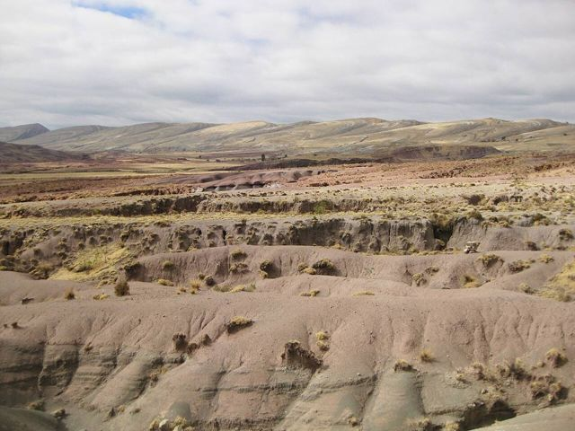
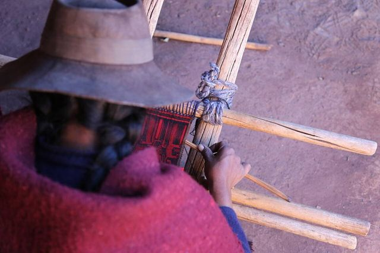
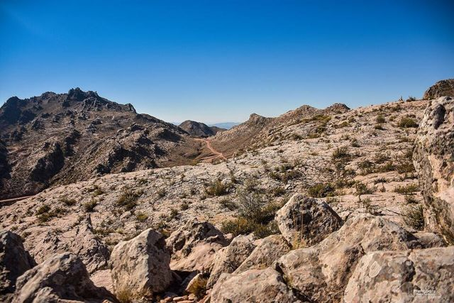

Maragua Crater
Chuquisaca Department · Nature and hiking

The Maragua crater isn't a volcano but a huge geological fold in shades of red, purple and ochre. You get there along an old Inca trail, pass through weaving villages and can even see dinosaur footprints. A beautiful and very authentic trek from Sucre.
2,900 maltitude
1 to 2 daysto spend there
Things to do
- Trek from Chataquila along the Inca trail to Maragua
- Niñu Mayu dinosaur footprints
- Jalq'a textiles
What to eat
- Quinoa soupA hot soup of quinoa and vegetables, served in refuges and high-altitude comedores. Perfect when it's cold.
- ChichaFermented corn beer, slightly sour, served in gourds (tutumas). Look for chicherías marked with a white flag.
Tip. 1 to 3-day trek with a guide from Sucre, or a day trip by 4x4.
Also here
- Crafts and markets Jalq'a textilesRed and black, full of fantastic creatures from the underworld: the weavings of the Jalq'a communities around Maragua are among the most striking in the Andes.
How to get to Maragua
Sucre 4x4 tour or excursion · 2 h 30 by 4x4 or 1 to 3 days on foot
Guided trek or 4x4 from Sucre.
Photos of Maragua Crater



.jpg){kind=link}





.jpg){kind=link}

.jpg){kind=link}
More places in this region
 PotosíOnce the richest city in the world thanks to the silver of Cerro Rico. UNESCO-listed.
PotosíOnce the richest city in the world thanks to the silver of Cerro Rico. UNESCO-listed. Casa Nacional de Moneda (Potosí)The royal mint where Cerro Rico silver became coins, now Bolivia's great museum.
Casa Nacional de Moneda (Potosí)The royal mint where Cerro Rico silver became coins, now Bolivia's great museum. Ojo del Inca (Tarapaya)A perfectly round warm-water lagoon, 30 minutes from Potosí.
Ojo del Inca (Tarapaya)A perfectly round warm-water lagoon, 30 minutes from Potosí. SucreThe “white city” and constitutional capital: the most beautiful colonial city in the country.
SucreThe “white city” and constitutional capital: the most beautiful colonial city in the country. TarabucoBig Sunday market of the Yampara communities, with remarkable textiles.
TarabucoBig Sunday market of the Yampara communities, with remarkable textiles.- CandelariaA Yampara village beyond Tarabuco: an old hacienda, weaving and rural tourism.
- ZudáñezA small valley town linked to the wars of independence, east of Sucre.